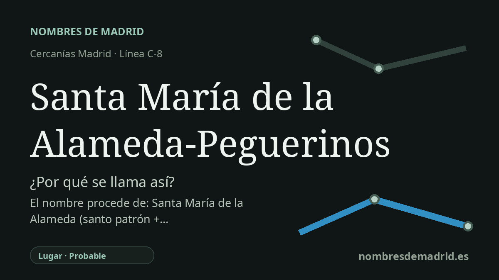

Publicado el · Investigación de Nombres de Madrid · Cómo verificamos cada origen · 9 fuentes consultadas
Respuesta rápida
La estación toma su nombre compuesto de Santa María de la Alameda, el municipio donde se encuentra, y de Peguerinos, el municipio abulense al que también sirve. Los significados antiguos apuntan a un topónimo mariano con una alameda, o arboleda de álamos, y al probable vínculo de Peguerinos con los pegueros, fabricantes o tratantes de pez.
La historia del nombre
El nombre de la estación es un nombre compuesto de servicio. La estación ferroviaria está en el municipio de Santa María de la Alameda, en el núcleo conocido como La Estación, y la segunda parte, Peguerinos, señala el municipio cercano de Ávila al que también da servicio. La página de Adif y el mapa de Cercanías de Renfe conservan la forma completa Santa María de la Alameda-Peguerinos.
El primer topónimo tiene una lectura religiosa y paisajística evidente: Santa María remite a la Virgen María, y alameda significa un lugar poblado de álamos o un paseo con álamos. La información patrimonial del municipio destaca la iglesia parroquial de Nuestra Señora de la Alameda, edificio del siglo XVI situado frente al ayuntamiento en el centro histórico. La explicación tradicional es plausible, aunque no está demostrada por un documento de denominación.
La historia local es más prudente que la leyenda sencilla. La página municipal de historia dice que la fundación de Santa María de la Alameda se desconoce con certeza y que puede relacionarse con la repoblación posterior a la reconquista de la zona desde finales del siglo XI; también indica que el nombre podría proceder del apellido de un primer poblador o propietario. ADI Sierra Oeste añade otra pista toponímica local, al sugerir que el despoblado de El Alaminejo pudo influir en el topónimo actual.
Peguerinos introduce otra economía serrana. La RAE define peguero como la persona que saca o fabrica la pez, o trata con ella, y peguera como el hoyo donde se quema leña de pino para obtener alquitrán y pez. En un territorio de pinares como Peguerinos, esto da una base lingüística sólida para vincular el topónimo con la resina, la fabricación de pez y los oficios forestales, aunque no consta una página etimológica municipal que lo afirme directamente.
La interpretación mejor respaldada es que la estación se llama por dos municipios, no directamente por una santa y un oficio. Las etimologías profundas no tienen el mismo grado de certeza: alameda y peguero son voces seguras de diccionario, la advocación de la iglesia está bien documentada y la explicación de Peguerinos es lingüísticamente fuerte; el motivo histórico exacto por el que Santa María de la Alameda recibió su nombre municipal completo sigue siendo parcialmente incierto.